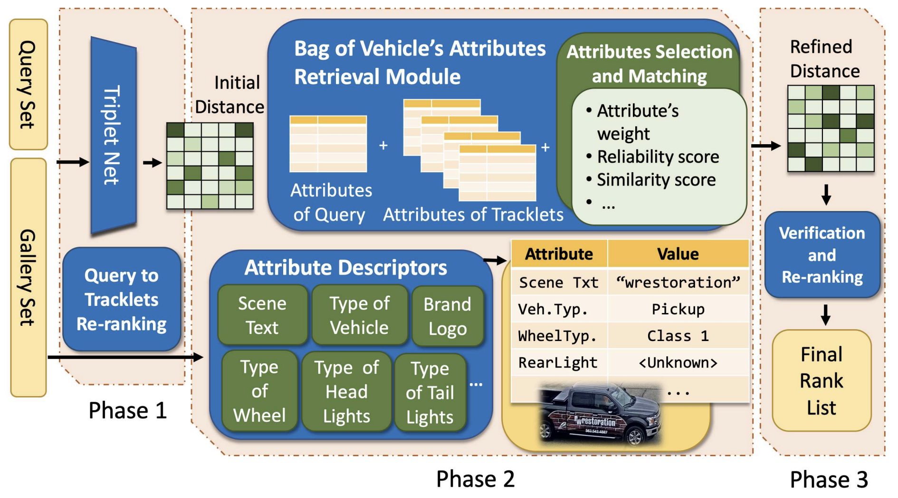
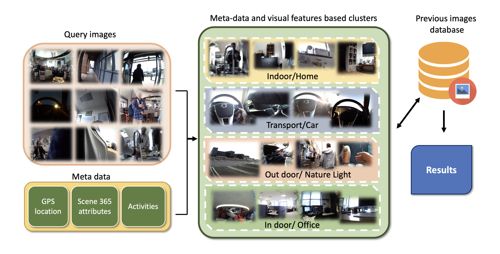

Publication
Selected Publications

Minh-Triet Tran, Tam V Nguyen, Trung-Hieu
Hoang et al.
Computer Vision and Pattern Recognition (CVPR) workshops 2020
[Project
Page]
[Paper]
Trung-Hieu Hoang, Hai-Dang
Nguyen,
Viet-Anh Nguyen, Thanh-An Nguyen, Vinh-Tiep Nguyen, Minh-Triet Tran.
Enhancing Endoscopic Image Classification with Symptom Localization and Data
Augmentation.
In proceeding of ACM Multimedia 2019 (ACMM'19)
[Project
Page]
[Paper]
Khac-Tuan Nguyen, Trung-Hieu
Hoang,
Minh-Triet Tran, Ngoc-Minh Bui, Trong-Le Do, Viet-Khoa Vo-Ho, Quoc-An Luong,
Mai-Khiem Tran, Thanh-An Nguyen, Thanh-Dat Truong, Vinh-Tiep Nguyen,
Trung-Nghia Le,
and Minh N. Do.
Vehicle Re-identification with Learned Representation and Spatial
Verification and
Abnormality Detection with Multi-Adaptive Vehicle Detectors for Traffic
Video
Analysis.
Computer Vision and Pattern Recognition (CVPR) workshops 2019
[Paper]
Minh-Triet Tran, Trung-Nghia Le, Tam V. Nguyen,
That-Vinh
Ton, Trung-Hieu Hoang, Ngoc-Minh Bui, Trong-Le Do, Quoc-An
Luong,
Vinh-Tiep Nguyen, Duc Anh Duong, Minh N. Do.
Guided Instance Segmentation Framework for Semi-supervised Video Instance
Segmentation.
Computer Vision and Pattern Recognition (CVPR) workshops 2019
[Paper]

Trung-Hieu Hoang, Mai-Khiem
Tran, Vinh-Tiep Nguyen, Minh-Triet Tran
ImageCLEF - Multimedia Retrieval in CLEF 2019
[Paper]